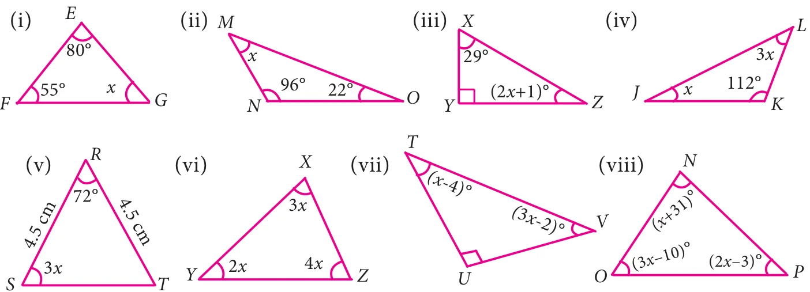
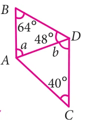
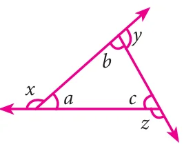

- Can \(30^{\circ}\), \(60^{\circ}\) and \(90^{\circ}\) be the angles of a triangle?
- Can you draw a triangle with \(25^{\circ}\), \(65^{\circ}\) and \(80^{\circ}\) as angles?
- In each of the following triangles, find the value of \(x\).


- Two line segments \(\overline{AD}\) and \(\overline{BC}\) intersect at \(O\). Joining \(\overline{AB}\) and \(\overline{DC}\) we get two triangles, \(\triangle AOB\) and \(\triangle DOC\) as shown in the figure. Find the \(\angle A\) and \(\angle B\).

- Observe the figure and find the value of \(\angle A + \angle N + \angle G + \angle L + \angle E + \angle S\).
- If the three angles of a triangle are in the ratio \(3:5:4\), then find them.
- In \(\triangle RST\), \(\angle S\) is \(10^{\circ}\) greater than \(\angle R\) and \(\angle T\) is \(5^{\circ}\) less than \(\angle S\), find the three angles of the triangle.
- In \(\triangle ABC\), if \(\angle B\) is 3 times \(\angle A\) and \(\angle C\) is 2 times \(\angle A\), then find the angles.
- In \(\triangle XYZ\), if \(\angle X : \angle Z\) is \(5 : 4\) and \(\angle Y = 72^{\circ}\). Find \(\angle X\) and \(\angle Z\)
- In a right angled triangle \(ABC\), \(\angle B\) is right angle, \(\angle A\) is \(x + 1\) and \(\angle C\) is \(2x + 5\). Find \(\angle A\) and \(\angle C\).
- In a right angled triangle \(MNO\), \(\angle N = 90^{\circ}\), \(MO\) is extended to \(P\). If \(\angle NOP = 128^{\circ}\), find the other two angles of \(\triangle MNO\).
- Find the value of \(x\) in each of the given triangles.


- In \(\triangle LMN\), \(MN\) is extended to \(O\). If \(\angle MLN = 100 - x\), \(\angle LMN = 2x\) and \(\angle LNO = 6x - 5\), find the value of \(x\).

- Using the given figure find the value of \(x\).

- Using the diagram find the value of \(x\).
Objective type questions
- The angles of a triangle are in the ratio \(2:3:4\). Then the angles are
(i) 20, 30, 40 (ii) 40, 60, 80 (iii) 80, 20, 80 (iv) 10, 15, 20
- One of the angles of a triangle is \(65^{\circ}\). If the difference of the other two angles is \(45^{\circ}\), then the two angles are
(i) \(85^{\circ}, 40^{\circ}\) (ii) \(70^{\circ}, 25^{\circ}\) (iii) \(80^{\circ}, 35^{\circ}\) (iv) \(80^{\circ}, 135^{\circ}\)

- In the given figure, \(AB\) is parallel to \(CD\). Then the value of \(b\) is
(i) \(112^{\circ}\) (ii) \(68^{\circ}\) (iii) \(102^{\circ}\) (iv) \(62^{\circ}\)

- In the given figure, which of the following statement is true?
(i) \(x + y + z = 180^{\circ}\) (ii) \(x + y + z = a + b + c\)
(iii) \(x + y + z = 2(a + b + c)\) (iv) \(x + y + z = 3(a + b + c)\)
- An exterior angle of a triangle is \(70^{\circ}\) and two interior opposite angles are equal. Then measure of each of these angle will be
(i) \(110^{\circ}\) (ii) \(120^{\circ}\) (iii) \(35^{\circ}\) (iv) \(60^{\circ}\)

- In a \(\triangle ABC\), \(AB = AC\). The value of \(x\) is \(\underline{\qquad}\).
(i) \(80^{\circ}\) (ii) \(100^{\circ}\)
(iii) \(130^{\circ}\) (iv) \(120^{\circ}\)
- If an exterior angle of a triangle is \(115^{\circ}\) and one of the interior opposite angles is \(35^{\circ}\), then the other two angles of the triangle are
(i) \(45^{\circ}, 60^{\circ}\) (ii) \(65^{\circ}, 80^{\circ}\) (iii) \(65^{\circ}, 70^{\circ}\) (iv) \(115^{\circ}, 60^{\circ}\)